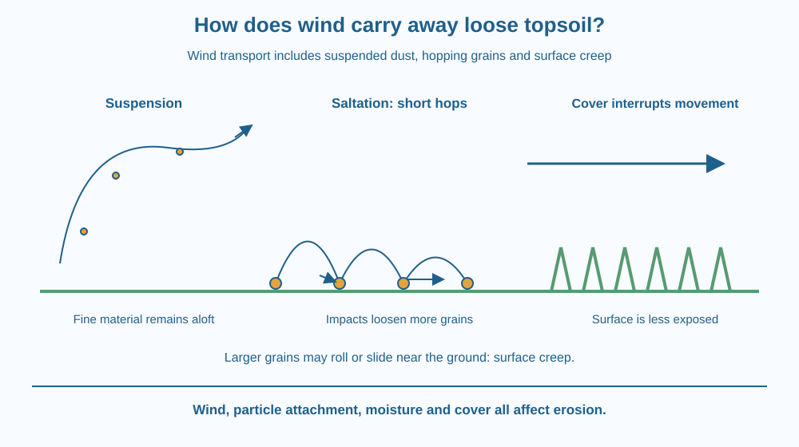

Explain how moving air can detach and transport loose soil particles. Distinguish suspension, saltation and surface movement. Predict how surface cover and wind barriers influence erosion without assuming that every windy day produces the same soil loss.
A dry bare field can produce a dusty haze when a strong wind passes. Nearby, a patch covered with low vegetation may release much less dust. The wind did not need to dig with a shovel, yet material has left the ground.
Look closely at a safe photograph of such a scene. Some grains may move close to the surface while finer material remains in the air. These are not merely different heights of the same journey: several transport mechanisms can operate together.
The question is how wind starts movement and why some surfaces resist it better than others.
Wind erosion is the removal and transport of surface material by moving air. It begins when the forces exerted by the air and impacts from moving grains overcome the forces holding particles in place. A loose, dry, exposed surface can be particularly vulnerable.
Particle behaviour depends on size, mass, shape, moisture and how strongly particles are attached to neighbours. It is wrong to assume that the smallest particles always lift most easily. Very fine particles can stick together or bind to surfaces, especially when moisture is present.
Once detached, very fine material can be carried in suspension. Turbulent air movements help keep particles aloft. Suspended dust may travel beyond the field where it originated, although the distance depends on weather and particle properties.
Some larger grains move in short hops. This is saltation. A grain lifted from the surface falls back and strikes another part of the ground. The impact can dislodge additional material, so movement can build through a chain of impacts.
Still larger particles may roll or slide close to the surface. This is often called surface creep. Hopping grains can help push or knock these particles along. Therefore the air does not have to lift every transported grain fully into the atmosphere.
These pathways sort material during transport. The fine, nutrient-rich or organic components of topsoil can be lost, depending on the soil. However, the lesson does not assign a universal nutrient percentage to dust or a fixed erosion rate to a field.
Surface cover interrupts the process. Leaves, crop residues and other suitable cover can reduce wind reaching the soil, intercept moving grains and protect exposed surfaces. Roots also help stabilise soil, but keeping the surface protected matters even before a plant's roots are considered.
A windbreak slows and redirects airflow. A barrier that lets some air through can shelter an area without creating the same strong downwind turbulence as a completely solid wall. Its effectiveness depends on height, spacing and the landscape. One short barrier cannot protect an unlimited distance.
Draw a surface with three particles. Put the smallest particle in a looping air path for suspension, the middle particle on a series of low arcs for saltation, and the largest on a rolling path.
Now add a patch of surface cover. Let it interrupt the hopping path and shield part of the soil. You have changed the route by which one moving grain can set others in motion.
The drawing should not imply a sharp universal size boundary between modes. Real grains vary, and changing wind conditions can change how a particular particle moves. The three names describe transport behaviour rather than three perfectly separate kinds of soil.
The SVG shows wind crossing a bare soil strip. A high curved path indicates suspended fine material, low repeated arcs indicate saltation, and short arrows near the surface indicate creep.
A covered strip beside it has fewer exposed grains and a reduced near-surface flow arrow. The barrier is shown as permeable rather than a sealed wall. Labels remain outside the particle paths so the three mechanisms can be followed separately.
All movement paths are schematic. Their heights and distances are not measured trajectories and should not be used to calculate a field's erosion rate.

Dry parts of western India can experience dusty conditions, but wind erosion is not limited to deserts. Bare construction sites, exposed roadside soil and recently worked fields can also lose surface material when conditions favour movement.
Farmers may retain suitable crop residues, establish vegetation or use windbreaks as part of soil protection. The choice depends on cropping needs, water availability and local conditions. A classroom model is not enough to prescribe a complete farm-management plan.
Dust reaching a school playground may have come from another exposed surface. That observation suggests that protection often requires considering the surrounding area, rather than sweeping only the place where dust settles.
Do not blow real soil, flour or sand into the air. Use a sheet of paper, small crumpled paper pieces and folded strips as cover. Keep windows closed so the pieces remain contained.
This is a transport model, not a realistic soil experiment. Paper differs from soil in weight, shape and sticking forces. Do not infer a field erosion rate from how far a paper piece moves.
Suppose a surface has a firm crust but loose material below. Wind alone may not initially expose much material. What might change if trampling breaks the crust?
Now imagine moist soil drying after several days. Identify which conditions might make detachment easier. Use these cases to explain why knowing wind speed alone cannot fully predict the amount of soil moved.
What is the name for soil grains moving in short hops?
Answer: B — Saltation describes repeated short hopping movements near the surface.
Why can ground cover reduce wind erosion?
Answer: C — Cover reduces exposure and can interrupt grain impacts that dislodge more material.
A crust is broken by repeated trampling. What might happen?
Answer: A — Breaking a protective crust can expose particles that are easier to detach.
Design a protection plan for a small bare patch beside a school. Include surface cover and a barrier placed where it would reduce exposure to the common wind direction.
Explain separately how your plan limits initial detachment and interrupts the movement of already hopping grains. State one observation you would record before and after protection, without promising a precise reduction that you have not measured.
A moving grain can help move another grain. Wind erosion can therefore involve a chain of impacts rather than air lifting each particle independently. Breaking that chain with cover can matter even when the wind itself continues. The mechanism explains why the arrangement of the ground surface is part of the problem.
Wind moves soil through suspension, hopping and surface creep; protected surfaces interrupt detachment and the chain of grain impacts.